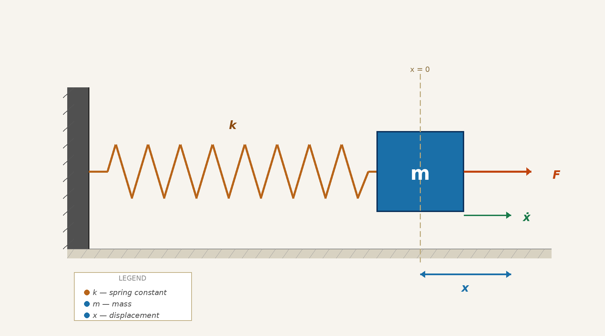
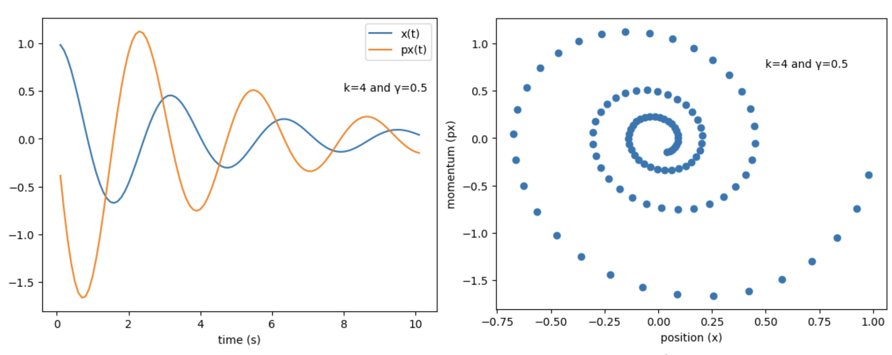
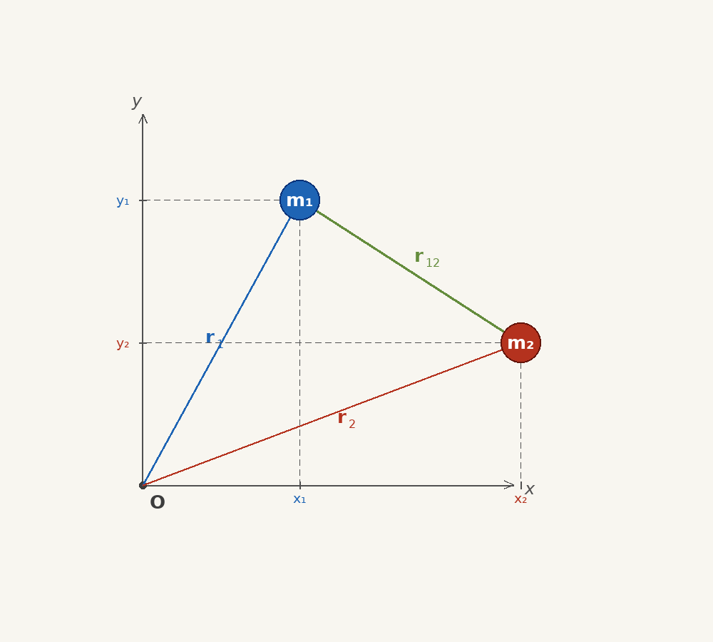
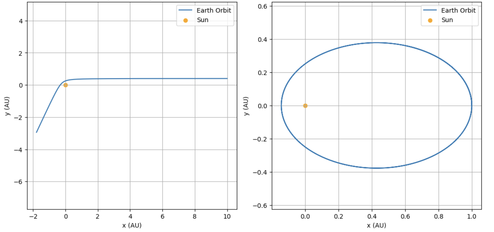

It is often misinterpreted that Newton's second law is the law that defines force. There is no need to define force — in fact, this is the law of predicting the dynamics of classical systems. The idea is:
where the force vector $(\vec{F})$ is an empirical quantity that must be defined by the mechanical system. Once we obtain the expression of the force by intelligent guess, it is a matter of time before we can predict the dynamics — evolving the state over time — of the system from its initial state.
One of the simplest cases is a 1-dimensional oscillator like a spring-mass system or a simple pendulum. In the case of a spring-mass system, a massless spring is attached to a block of mass $m$. The nature of the force acting on the system is proportional and opposite to the displacement acted on the spring.
There is also a damping force applied alongside the restoring force; it does not depend on displacement but is proportional to velocity. Therefore, the force is:

In Newtonian mechanics, obtaining the expression for the force is the highest task. Eq. 2 is derived from various experiments. The unknown parameters — damping constant $(\gamma)$ and spring constant $(k)$ — are characteristics of the system. The spring constant tells how stiff the spring is, and the damping constant describes the strength of air resistance and friction.
To determine the dynamics of motion, substitute Eq. 2 into Eq. 1 and solve:
To solve the above dynamic equations we must first assign a frame of reference. Choosing $x = 0$ as origin is appropriate — Newton's 1st law ensures consistency in any inertial frame, since before applying external force the mass remains at $x = 0$. The system has only one degree of freedom and $x(t)$ is the position of the mass block from the origin.
The RK4 method can be used for solving these differential equations with initial conditions:

It is inferred from experiments that gravitational force is proportional to the mass and inversely proportional to the square of distance:
The success of Newtonian mechanics lies in explaining the solar and Earth–Moon systems. Let us solve the Sun–Earth system using Eq. 1. The equations now have two degrees of freedom because planetary motion is in a plane with the Sun at the origin. Therefore, the equations of motion of the Earth are:

Watching Eq. 8 and Eq. 9 closely, they can be recombined as:
We can now solve the planetary equations of motion under two scenarios of initial conditions.
An astronomical object arrives from infinity with a constant horizontal velocity and finite impact parameter.
An astronomical object with finite vertical velocity and zero horizontal velocity.
